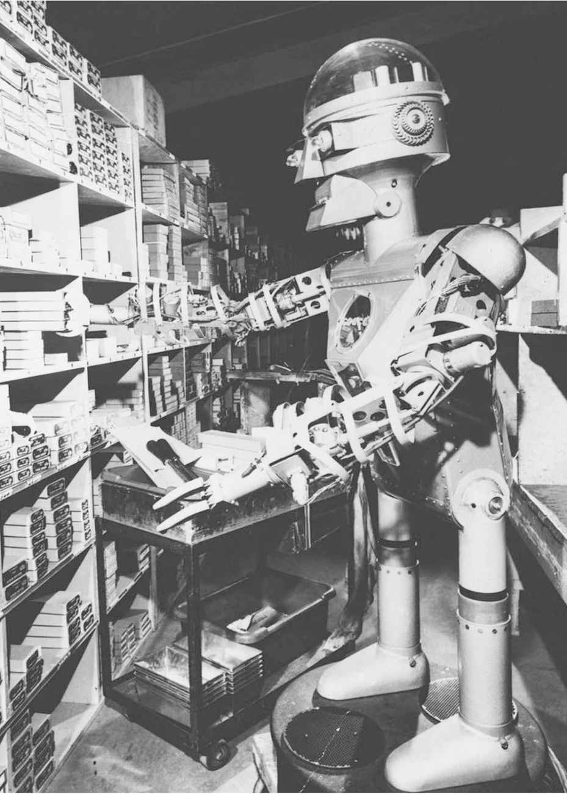
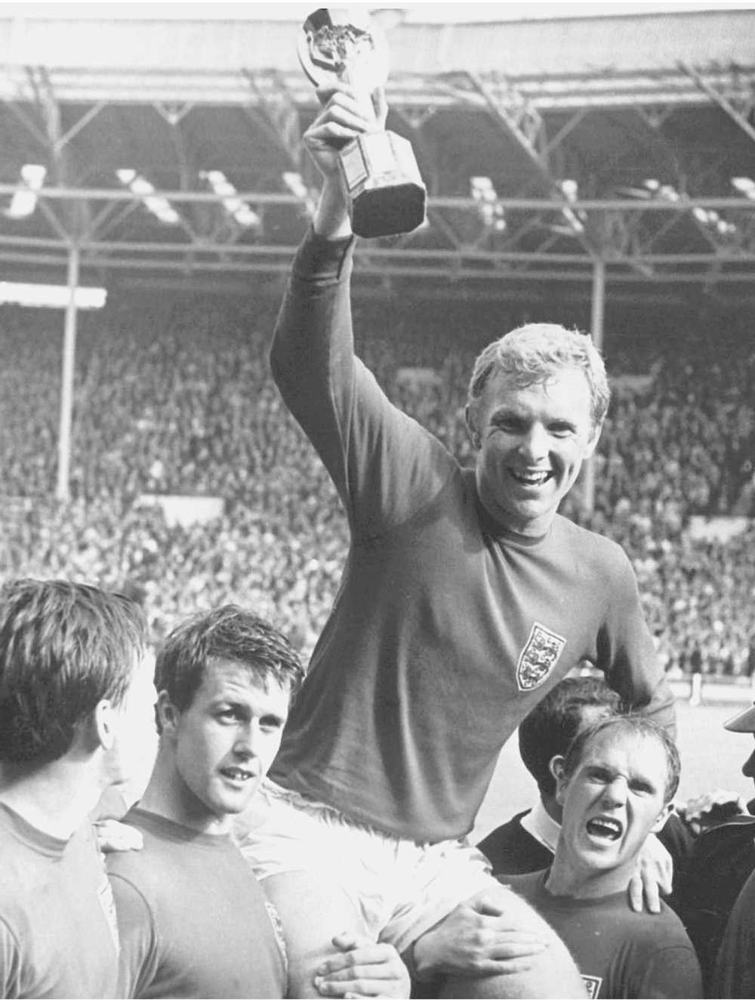

相信“没有上帝，可行任何事”这个虚假观点，这本身不能给我们提供拒绝无神论的理由，因为它至少为我们享受一些可能的骄奢淫逸的生活打开了大门。也许对无神论来说更加犯难的是“没有上帝，一切都无意义”的观点。当然，你可以做你想做的事，因为没有神性力量阻止你，但为什么一定要做事，意义何在？如果我们的生命最终会化为乌有，我们为什么还要挣扎一生（对很多人来说，生活就是挣扎）。“生活就是狗屎，然后你就死了”，这句话是那些幻灭失意之人的虚无符咒，他们放弃了对上帝的信仰，认为这样生命就成了一场毫无意义的悲喜剧。
要回答这些问题，我们有必要回到根本，思考人生的意义或目的这个概念。这里的问题是，人们通常会假定宗教人士不会有人生意义的问题。买入宗教的股份，意义就免费而来了。选择离开宗教，就失去了意义。这个思路与捆绑伦理与宗教的思路十分相似。人们假定伦理与宗教是绑在一起的，所以没有宗教，伦理就成了问题。正如我们在上一章看到的，这肯定不正确。在本章中，我会论证生命的意义和目的与宗教绑在一起的看法也不正确。要论证这一点，我们先要看怎样理解生命具有意义和目的的观点。
法国存在主义思想家让—保罗·萨特认为抛弃上帝存在的观念，人类就会失去“本质”。萨特对“本质”的定义非常特别，他用裁纸刀的例子做了解释。他说，一把裁纸刀有着明确的本质，因为它被设计出来时就带有了目的，即裁纸。这样，它的创造者就赋予了它本质：裁纸刀的本质是裁纸。
这里本质的概念与某些人认为的裁纸刀的目的相吻合。换句话说，裁纸刀有目的，即其创造者赋予它的用途。
萨特提出，由于上帝不存在，人类就与裁纸刀不同，因为并没有一个智慧的设计者把人类创造出来。因此，人类没有萨特所说的本质。不过有意思的是，他并没有得出人类没有目的或意义的结论。他的理由我们稍后会明白。
不过，首先我们要关注某物的目的或意义由其创造者赋予的看法。这个看法似乎支持宗教观点，即信仰上帝自动解决了人生意义的问题。如果我们是由上帝创造的，那么我们的目的就自然由上帝交予我们，因为他在创造我们的时候脑子里就有了某种目的。这种类比以各种各样的形式出现在宗教对话中。例如，人们有时会想当然地把《圣经》当作上帝的指令手册，其中载有创造物被上帝创造出来的目的。
不过这里的问题是，如果思考一下，我们会发现这似乎只给了我们一种不太令人满意的人生意义。我们可以从裁纸刀的类比中看出原因。虽然裁纸刀具有意义和目的是因为它有创造者，但这种目的对于裁纸刀来说 并不那么重要。当然，裁纸刀没有意识。这更加说明，当我们从设计用途来界定某物的目的时，这个目的的重要性在于创造者或该物的使用者，而非该物体本身。
我们现在来看一个例子，假定被创造出来的物体具有意识，设想一种反乌托邦式的未来，人类在实验室中被培育出来去完成特定的功能，这有点像奥尔德斯·赫胥黎在《美丽新世界》中描述的场景。这里我们可以想象有一个人，被创造出来的目的是打扫洗手间。如果这个人想知道自己人生的意义或目的，我们就可以不无道理地说，是“打扫洗手间”。但认为这个答案回答了有关人生意义的重大存在主义问题不免有些荒谬。简言之，由创造者赋予创造物的目的或意义不必然是我们所寻找的那种人生目的或意义，我们想知道的是生活对于我们自己 有什么意义。如果生活的唯一意义是满足他人 的目的，那么我们自己就不再是有价值的存在，我们只是他人的工具，就像裁纸刀或克隆出来的工人。
这就是为什么信仰上帝这位造物主并不能自动地为我们的人生提供意义。不过，它能以某一方式满足某些人对于意义的渴望。这样的方式有两种。第一种情况是，他们觉得按上帝的旨意去行事是幸福的。事奉上帝对于他们来说就是很好的人生目的。我觉得这有点奇怪，因为我觉得很难想见上帝创造出我们这样的生物来仅仅是为了事奉他：因为似乎他不需要别人为他做家务或其他类似的事。这在态度上也有点接近那些很多世纪以来都认为自己人生唯一的目的就是为贵族和上层阶级而劳动的人，这也让人有些不安。为自己的卑微地位感到骄傲，并把这种地位看作人生的意义，我觉得这似乎就是尼采所说的“奴隶道德”：认同事实上的不幸地位，以使这个地位看起来令人满意。这似乎就是萨特所说的“坏信念”：假装事情要好过它们的真实情况，从而逃避令人不安的真相。

图5 这个幸运的家伙从他的创造者那里获得了目的。这样不是很好吗？
第二种情况是，宗教人士相信上帝给我们安排的目的就是我们自己的 目的，而不是我们为他 所做的什么事。我们可能不知道这个目的是什么，但我们有的是时间去寻找，所以这么着急干吗呢？这是一个具有完全统一性的立场，但与宗教中的很多事情一样，我们应该认识到这需要宗教信徒采取完全盲目的信任，或者，按照他们更喜欢的说法，需要他们完全凭信念行事。赞同这个立场就等于承认宗教人士事实上对人生的意义或目的一无所知，但他们相信上帝给他们安排了目的。但这里还是存在那种让人困惑的疑虑，别人给我们的意义不必然是使我们自己的人生有意义的意义。宗教人士不得不凭信念，认为他们的人生目的不会是永远打扫天堂里的洗手间。
所以，无论是否存在上帝，如果人生真的有意义，那么它就必然是关于我们自己的事业、需要或欲望的意义，而不仅仅是我们的造物主的目的，不管这个造物主是人，还是物。顺便说一句，这就是进化论也不能为我们的人生提供意义的原因。进化论告诉我们，我们之所以在这里，在某种意义上是因为要复制DNA。但对我们为何存在、要实现怎样的生物功能而言，这完全是一种外在性的解释。这并没有解释人生意义的问题，就好像是在说，你被孕育的原因是你的父母想多领取一些子女补贴。这可能给出了你出生的部分原因，但并没有告诉你为什么你的人生是有意义的，如果它的确有意义的话。
如果我们抛开造物主的目的，开始独立地思考人生的意义，一个自然的出发点是思考我们自己的目的或目标。很多人的确是这样看待人生意义的。他们总是谈论自己到30岁、50岁或65岁时要实现些什么，其中隐含的假设是达到这些目标会使他们的人生完整，使他们的人生有意义。
这里有意思的一点是，在多数情形下，人们并不认为这些目标或目的是上帝赋予他们的。当然，有时你会听到运动员说这样的话“上帝让我来到这个世界，就是要赢200米跑的奥林匹克金牌”，但他的多数对手都会说，胜利是他们期望的东西，与上帝没多大关系。大体上说，当人们为自己设定人生目标时，是他们自己选择了这些目标，这实际上在很大程度上说明这些目标为什么对他们是有意义的。人们所做的是努力达到一定程度的“自我实现”。他们设定目标，认为这些目标能够开发、实现自己的潜能，从而使自己的人生在某种意义上比现在更加完满。例如，有音乐天赋的人设定的目标一旦实现，会表明他们最大限度地开发了自己的音乐潜能，从而成了比之前更为完整或完善的个体。
认为我们可以自己选择自己的人生目的和目标，从而成为自己人生意义的书写者的观点十分重要，我们不久还会讨论到。但首先我们应该认识到，把我们自己设定的一个或几个目标当作人生意义也有一些潜在问题。如果我们太过专注于目标，就会面临两种危险。
第一个危险是，我们可能会无法达成目标。在体育之类的领域中，无可避免的是，很多人无法实现目标。如果无法实现目标与使人生具有意义之事紧密相连，或者甚至是它的主要部分，那么这样的失败对一个人来说就是灾难性的。
第二个危险是，我们达成目标之后，人生也就变得无意义了。事实上，那些很多年专注于某个具体目标的人身上确实发生了这样的事。你会听到很多人这样说：“我一生努力工作都是为了实现这个目标，现在我成功了，但我不知道该干什么了。”通常，由于这样的人都有非常强的目标导向的个性，他们会设定另外一个目标，从而回到日常工作上。这只是要强调把意义与目标实现过紧地绑在一起会出现的问题：除了实现每个目标时的片刻欢愉外，人生永远不会真正让人心满意足。其余时刻，你要么在为着未来的目标努力，要么沉浸在过去的成绩中。
我们思考一下什么使事物有价值，这个问题就会更有哲学意味。例如，由于我过着令人兴奋的生活，所以今天我要买些食品杂货。我为什么要把宝贵的时间花在这么无聊的事情上呢？原因是我要吃东西。但我为什么要吃东西呢？有两个原因：一个是我喜欢吃东西，另一个是我需要食物才能活下去。接着，为什么要活下去呢？等等。
对于这一系列的“为什么”，我们可以给出两种答案。一种答案用更为根本性的目标来解释我的行为：买食物的原因是要活着。然而，对这样的答案，我们总是可以继续再问一个“为什么”。为什么要吃东西？为什么要活着？为了使这样的问题停下来，我们就必须给出一种自足的原因，而非用更进一步的目标或目的作为解释。我给出了这样的一个原因：我吃东西是因为我喜欢吃东西。如果你继续问我为什么喜欢，或者，我为什么应该做我喜欢的事，那么你就没有真正明白喜欢做一件事意味着什么。喜欢做一件事本身就是做这件事的一个好理由，只要这件事不会伤害别人或自己，不会妨碍你做更重要的事情，也不会违反其他类似的人生警示。所以，如果我用我喜欢吃来解释我为什么狼吞虎咽一盘土豆泥花椰菜，那么就没有必要或道理再追问为什么了。
如果我们把这个原则再推广一下，我们会看到，如果我们问自己为什么做某事，最终我们总是会说这件事本身有价值，而不仅仅是为更进一步的目的或目标服务。如果太过专注于目标，我们就可能忽略这个关键点。
但这并不意味着目标的达成对人生意义没有贡献。目标对于使我们的人生富于意义有着很大的作用。但目标要最大程度地起到这个作用，就要满足两个条件。第一，我们觉得达成目标的过程本身有意义，有价值。这样，我们为这个目标所花费的时间也就有意义，即使最后我们没有实现目标。第二，目标的达成本身可以带给我们具有永久价值的东西。这样，我们实现了目标之后，也不会突然觉得人生空虚。
太过专注于目标和成绩还有另外一个危险。这可能会使太多人的生命毫无意义。事实是，很多人，甚至是多数人，都不是目标导向的，对成功并没有很强的渴望。多数人渴望的是同伴情谊，是使自己开心的工作和足够自己过上品质人生的财富。如果这些都具备了，人生也就有了足够的意义，因为它们合起来本身就是有价值的。那么问下面这个问题还有道理吗：“你为什么想整天做你喜欢的工作，然后回家与你的爱人相聚，按照自己开心的方式度过闲暇时光呢？”问这样问题的人是不是忽略了什么呢？

图6 在此之后还能做什么呢？
我们得到了这样的观点：人生的终极目的必须是自身具有价值的东西，而不是无穷无尽的目的链条上的一环。这是无神论者觉得自己的人生比很多宗教人士的人生更为有意义的一个原因，后者把这个世界看作下一个世界的准备阶段。对这些人来说，生命自身没有任何价值。生命就像一枚硬币，它可以用来交换真正重要的物品，即逝后之世。然而，这仅仅是把什么使生命有价值的问题搁置了，因为它并没有告诉我们为什么天堂里的人生是有意义的，而地上的人生没有意义。我们再一次看到，宗教似乎并没有给我们提供答案，它只是让我们凭信念相信，答案会出现的。
由于人生在某个阶段总会显出其自身的价值，否则它就没有任何意义或价值，所以无神论者想要努力找到使当下的人生有意义的东西，而非寄希望于逝后之世更加美好，这样的愿望是理智而审慎的，特别是鉴于已有证据说明这是我们仅有的人生，就更是如此。
但是使人生有价值的东西是什么呢？任何简略的回答都会显得陈腐不堪，但这里真的没有什么秘密。雷·布拉德伯里在其短篇《月亮仍会明亮》中做了简洁的说明。他虽然讲的是火星人的故事，但故事的寓意可以适用于人类：
当世事艰难，生活不易的时候，生命就似乎毫无意义。但当生活富足了，那也就没有必要再去追问意义。正如上面的例子，如果一个人的工作和家庭生活都很顺利，那在某种意义上就没有理由再去问为什么人生值得去活。经历着它的人自然知道答案。
当然，这个说法本身并非什么足够好的答案，因为它并没有告诉我们在逆境中应该对别人或对自己怎么说。对我们多数人来说，生活就像一个混合体，诸事顺利美好的时刻稀少而短暂。但布拉德伯里的观点正确的地方是，这个答案的核心只能植根于生活本身具有价值的事实上，即便在艰难的时刻也是如此，生活不必服务于任何其他目的。此外，为什么我们应该活着这个问题的答案就是生命本身，认识到这一点，对于我们要面对人生短暂这个事实并使自己适应这样的人生十分重要。如果假装或想象人生的目的存在于其本身之外，那我们无异于一直在骑着驴找驴。
前面，在谈论人生何以值得活的时候，我举了吃大餐的例子。这可能在暗示，使人生有价值的东西不过是快乐。毕竟，快乐本身就是好事，如果我们经历着快乐，我们就不需要其他目的来说明它。因此，如果人生是有限的，而我们要在人生中本身就有价值的东西中找到意义，那我们难道不应该一心享乐吗？
很可能，这就是我们这个时代的世俗正教。“抓住今天，及时行乐”已经成了这个时代的信条。由于媒体评论和广告等的推波助澜，我们总是在不断寻找新的、更大的快乐。你只需一天的时间，专门去数报纸、杂志和广告上承诺向我们提供更大快乐的文章，你很快就会数不清楚。如果你看的是有关男性生活或女性生活方式的杂志，那就更是如此，它们唯一的目的似乎就是承诺让你变得更加幸福，更加满足，更加性感有魅力。如果这些生活提示真的发挥了作用，人们很快就没有必要再读这些杂志了。但它们的发行量一直都很高。我觉得这说明了问题。
还有一个具有说明性的情况：人们广泛认同我们正处在一个相当令人沮丧的社会中。在西方发达社会中，我们可以接触到的快乐之多之好超出了我们祖先的想象。但我们这群人并没有明显表现出心满意足。哪里出了问题呢？
这个明显的悖论在多数伦理哲学家的意料当中，他们这些人都对过分强调享乐表示怀疑。这里的主要问题是快乐有着稍纵即逝的本质属性。人们对此给出了各种各样的解释。感觉快乐当然不错，但快乐通常不会留存很长时间。事实上，完全致力于享乐的生活也可能很辛苦，因为当一个人真的严肃对待这件事时，他就不得不做出努力以不断获得更多。当下总是逃避我们的掌控，所以当下的快乐从其获得的那一刻起就注定了会从我们的手指间流走。
这就是致力于快乐的生活对于我们多数人来说很不能让人满意的原因。当然，好的生活总包含合理的快乐成分，只有最清教徒式的道德家才会持相反的看法。但幸福或满足不仅仅需要稍纵即逝的快乐。它要求我们去过令我们感到满足的生活，即使有时我们并非在享受快乐。没有什么程式可以确定这是怎样一种生活，各人对于这种生活的看法肯定有很大的不同。对于一些人来说，享乐主义的生活既可以带来瞬间的快乐，也可以带来持续的满足。对另外一些人来说，平静的、缓慢的爱的付出虽然在旁人看来可能没有什么快乐之处，却能提供极大的满足。
这些论述的主要意义在于，我们不应该过快地认定，如果这人生就是我们的唯一人生，而生命的意义必须从生活本身寻找，那么这就意味着我们应该追求享乐的生活。这可能符合人们对浅薄的无神论者的否定性思维定式，这些人沉醉于享乐，用享乐来填补自己毫无目的的空虚生活。但如果用于典型的无神论者，这个观点就会像无趣的狂热《圣经》布道者对宗教信徒的看法一样不准确。
我希望上述讨论已经说明了人生对无神论者来说也可以有意义，有目的。但如果把问题倒过来会怎么样呢：为什么会有人认为人生对无神论者来说不可能 有意义或目的呢？为什么人生的意义似乎会对无神论者构成一个特殊的问题呢？
答案也许是，无神论者不相信任何超自然的存在，而觉得自然世界中的死亡就是生命的终结。无神论者毫不避讳地接受人终有一死的事实，不相信逝后之世，不相信转世，甚至不相信自我会化为世界中的精灵。所以会有人认为，如果生命如此短暂，死亡就是终结，那这一切的意义何在呢？
我已经对此做了些回答。我没有回答的问题是，为什么接受人终有一死会使人生看起来比相信逝后之世更没有意义。这只能有两种解释：一是，生命只有比实际情况更长才会有意义；另一个是，生命只有永无休止才会有意义。这两个假设都经不起推敲。
我们来看生命只有永无休止才有意义的观点。当然不是只有永不停息的活动才是有意义的。事实上，真实的情况经常与此相反：通常活动可以结束或完结才会有意义。例如足球比赛，它的目的只在90分钟比赛结束产生结果后才表现出来。无休止的足球比赛会像在公园里胡乱踢一样没有意义。戏剧、小说、电影以及其他叙述形式也需要某种完结。学习时，我们上的课程会在某个确定的时刻结束，不会永远进行下去。在几乎所有人类活动中，你都会发现需要某种完结或完成才能使它们有意义。
沿着这个思路，我们就会产生疑问，如果人生是永恒的，它是不是会不那么 有意义呢？如果我们的生命永无休止，那么做事还有什么意义？如果我们总是有时间把事情放到以后去做，那为什么还要努力做事，比如提高高尔夫球技？不正是认识到人生的有限，听到了“插着翅膀的时间马车快速飞来”的声音，我们才被驱策前行，生活才有意义吗？
有人可能会反对，认为如果永恒的人生只是相同事情的不断重复，当然没有意义；但如果其中包含着不同的人生，那就是有意义的，甚至可以说是一种纯粹的幸福或涅槃的状态。
这个观点有两个问题。第一个是，如果永恒的人生与目前的人生看不出相同之处，那么经验目前人生的人如何明确为你或明确为我，这并不是显而易见的事。人类是具象的生物，我们整体的行事方法体现出人的思想、情感、筹划、关系、欲望和失望。无具象的人生，没有过去与未来，只是一种沉浸在永恒福祉中的感觉，在我看来这种人生似乎完全不像我自己的人生。所以，我们面临着一种困境。要么可以看出逝后之世与此世相似，这样永恒的人生似乎就没有太大的意义；要么逝后之世与此世完全不同，这样它就不太像我们真的可以过的生活。
这个观点的第二个问题是，它的基础是某些状态本身就有价值。涅槃的全部意义在于我们不需要去问处于涅槃状态有什么意义，因为涅槃本身就有价值。但如果我们认为某种形式的存在本身就有价值，可以作为我们的人生，那为什么要忽视我们真正在过的人生的价值，而寄希望于可能到来的理想的逝后之世呢？
所以，简言之，永恒的人生才有意义的说法不成立。那另外一个看法，人生应该再长一些才有意义，对不对呢？这也很不可信。如果有限的生命可以有意义，那么认为它必须具有某个长度的看法就有点奇怪。人类一生的时间，从宇宙尺度看，不过眨眼之间。即便从人类观察的尺度看，人生也是飞快而过，让人不禁唏嘘。但既有那些至老年仍对生命充满渴望的人，与此同时，也有那些被人生的起起伏伏弄得精疲力尽、心灰意冷的人。一生的长度可能并不完美，但已足够使人生充满意义。
我个人不太赞同人生的长度正正好好的看法。经常用来说明这个看法的理由并不是认为自然眷顾了我们，而是认为我们总是按照标准度过一生：如果平均寿命延长，我们也不会过更有意义的生活，我们会相应地调整自己的人生规划，比如，在事业上放缓步伐。这是个让人感到安慰的想法，但我真的认为生命延长一些会是好事（假设在这额外的岁月里我们也能健康生活）。人生中要做的事情如此之多，七十年左右的寿命似乎的确有些吝啬。接受人终有一死不同于相信我们的世界是所有可能世界中最好的一个。我们的平均寿命本来就不长，太多人甚至还无法活这么长。
因此，死亡在无神论世界观中占据非常重要的地位。正是这个最后句点才使人生在开始时有了意义，但它来得如此之快，或者即便它如常到来，也是令人遗憾的事。“好事终须了”这句陈词滥调的确有些道理。《奥赛罗》的幕布落下并不会使这部戏变坏，反而在一开始就是这部戏取得成功的必要条件之一。所以我们对死亡表示遗憾的同时，也知道正是死亡的不可避免使得人生如此有价值。
虽然我在这里论述的是有意义的无神论人生的可能性，但也许论述有意义的人生的可能性会更令人信服。的确有很多无神论者过着有意义的、有目的的生活，否认这一点就太过傲慢了。
在网站celebatheists.com上，你可以看到一长串健在的无神论者的名字。其中包括阿兰达蒂·洛伊，获奖作品《微物之神》的作者，她还是印度倡导社会变革和社会正义的活动家。在一次采访中，她被问及死亡是不是终点，她回答道：“是的。……有时在死之前，人生已经结束了。”我觉得这个尖锐的回答说明了，人终有一死的无神论信仰可以使人们真正去关心那些虽然活着，但没有机会享受他们唯一人生的人们。
有趣的是，很多著名的无神论者是作家、思想家和艺术家。捷克作家米兰·昆德拉，《不能承受的生命之轻》的作者，就是无神论者；而泰瑞·普莱契，“碟形世界”系列小说的作者，说：“我想我很可能是一个无神论者，但由于上帝不存在而对上帝有点生气。”
也许认为无神论者不可能过有意义的生活的人所面临的最大挑战来自捷克共和国，那里40%的人持无神论。到布拉格去度假吧，看看你是否会被迷失意义的虚无淹没。
历史上也出现过很多无神论者，包括法国前总统弗朗索瓦·密特朗（1916—1996）、美国物理学家理查德·费曼（1918—1988）、现代土耳其之父穆斯塔法·凯末尔·阿塔图尔克（1881—1938）以及诺贝尔物理奖和化学奖得主玛丽·居里（1867—1934）。
我不是在说这些人都是英雄，也不是在说我们应该钦佩他们的所作所为。无神论者的人生有好有坏，这与牧师、教皇和拉比的人生一样。说这些只是要说明这些都是富有意义和目的的人生，它们可以作为具体的例证，说明不信仰上帝的人不会失去方向或意义。证明某事可能存在的最好证据是说明它真的存在。这些人说明有意义的无神论人生不仅仅具有理论上的可能性。它们每天都发生在我们周围。